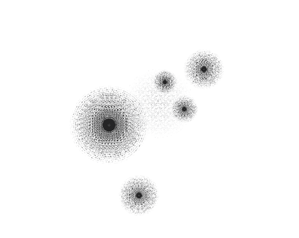
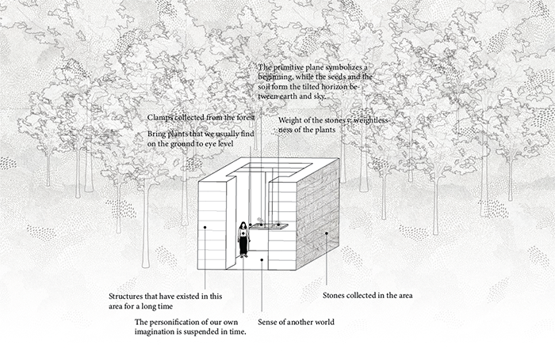
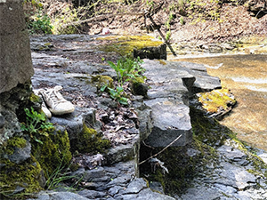

Spring 2020
Material Flows
In the Great Derangement , Amitav Ghosh describes the discourse of Anthropocene by starting with the question, “who can forget those moments when something that seems inanimate turns out to be vitally, even dangerously alive?” (Ghosh 3). The uncanniness one perceives when finding something that should be perfectly under control to be invaded by some “natural forces,” i.e. non-human beings with agencies, is relatable to most people. Just before I started to write this essay, my friend shared with me her story of finding bees nesting in the rearview mirror of her car, with the conclusion that “I appreciate the ecological value of pollinators in eco-system, but I don’t want them in my rearview mirror.”
The tendency to exclude other animate beings in the environment dominated by humans may explain the underappreciation of moss. Moss is often seen as otherness in urban environment. In the American suburban setting, the presence of moss on the roof or in the front yard may indicate the owner’s inability to take care of her/ his home. With its great adaptability and flexibility, moss has little discrimination of environment based on the artificiality or naturalness of the space. Therefore, its presence blurs the boundary between a “natural” and a controlled environment. Even in moss itself, the boundary between animate and inanimate is fluid. As a primitive species, moss is able to suspend animation when lacking water, and can return to vitality under suitable circumstances. In the forest, moss facilitates the decomposition of dead wood, which turns into other life forms. Therefore in many sense, moss deconstructs the boundary between animate and inanimate beings.
The deconstruction of dichotomy is important, yet largely missing from the discourse of Anthropocene, which inherently regards the environment as passive and inert. As Ghosh attests, the great derangement of this period is that “a significant number of [human] kind believe that planets and asteroids are inert” (Ghosh 3). The dichotomy is contested by material ecocriticism. For example, Derek Woods concedes that Earth system scientists “narrate universal humanity –‘the species’- as hylomorphic terraformer of a passive Earth” (Woods 137). Donna Haraway reveals that “no species, not even our own arrogant one, can act alone” (Haraway 159). Serpil Oppermann concludes these ideas in the Scale of the Anthropocene: Material Ecocritical Reflections, where she proposes “to discuss the messy intra-actions of the Anthropocene agencies using the lens of material ecocriticism” (Oppermann 3). In this essay, I want to explore how these messy intra-actions are expressed by moss in landscape.
In the previous essay, I examined moss as an object performs in a system. Based on my interpretation of the thing-power model, I concluded that moss can facilitate relationships between other objects and enable the transition of system into stability and diversity. To understand moss in more intricate settings, I want to introduce the parameter of time into this model, which helps to challenge the binary perception of animate and inanimate objects. I will use a landscape project, Le caveau by Christian Poules, as a case study, to explore how landscape architecture projects can use moss as a material to create an alternative space between “urban” and “nature,” to facilitate a new way to perceiving time, and to provide a space for thinking about different relationships.
My earlier investigation of moss was inspired by the idea of moss as a cultural signifier of time. Based on that, I have realized that the expression of time is ambiguous in moss itself. While moss indicates the aging of the artificially constructed environment, it simultaneously embodies a sense of beginning. For example, apocalyptic films often portray city sidewalks covered with moss after catastrophe, to indicate the end of civilization and the beginning of recovering of the planet at the same time. Therefore hope and hopelessness coexist in moss. In my second essay, I categorized the happenstance of moss into three models of systems: development, desolation, and violence. Although the use of language seems to indicate the temporality of events (i.e. development at the begging, desolation at the end), the models were not intended to be understood by this linear sequence. Development, desolation and violence are three scenarios that happen randomly in time. The desolation of one system can trigger the development of another. Moss as an object facilitates these transitions, and catalyzes the system to evolve in all directions. Therefore moss draws connection between events at different coordinates in time, and problematizes the linear temporality of the system.
The fact that moss does not change its appearance much over time also produces uncertainty of its temporality. This reflection comes from the common observation in the forest. Most people often see the development of forest as linear, as most trees expand vertically and horizontally over time. Therefore the age of a certain tree can be told based on its appearance. The revelation of time is not evident in moss, as one can never tell how old a cluster of moss is based on its size. Moreover, in the forest, beings are organized vertically based on their age. The further away they are from earth, the longer it took to develop. Earth is the site of birth and the destination after death. Yet moss has extremely limited capacity to expand upward. Most of the time they remain at the ground level.

The presence of moss challenges our imagination of linear temporality, on which the dichotomy between animate and inanimate is firmly established. The modern invention of linear temporality is largely influenced by the evolved attitudes towards life and death. By denying the existence of afterlife or reincarnation, human life is portrayed as a one-way straight journey from birth to death. However, moss perceives life and death in a much different way. First of all, it does not have a firm lifespan like humans. Also, it participates in transforming “dead” objects into other life forms, as examined in the decomposition of dead trees. Therefore, the distinction between inanimate and animate objects have little meaning in the eye of moss.
It is also noteworthy that in the thing-power model, the agency of objects does not depend on whether it is “alive” or “dead.” According to Jane Bennett, a material body always resides within some assemblage or other. Its thing power is its operating in conjunction with other things. The thing-power of objects has nothing to do with animation (, for example, the thing-power of a nuclear bomb evidently overwhelms that of me, a living being). Moss as a mediator and catalyst of the system is able to generate relationships based on objects’ agency, thus opens up the possibility for “animate” objects into humanly controlled “inert” system.
What moss embodies and expresses is very evocative for dialectical thinking about the discourse of Anthropocene. Moss’s capability to eradicate the line between animate and inanimate can inspire mankind to think about the entangled relationships between different species, and the inseparability between “us” and “the environment.” Using Christian Poules’ project Le caveau as an example, I would then examine how moss can be used as a material to articulate these messages in landscape architecture project.
Le caveau is a landscape installation exhibited in the International Garden Festival from 2016 to 2019, at Jardins de Métis (Reford Gardens). The project is described on the official website as follows:
The growing plane is shrouded in the intimacy of Le caveau - a simple room of stone and earth. It is a room for reflection. It is a room for dreamers. Just as the plane levitates before us, we are held in the balance of the stone and life itself. The personification of our own imagination is suspended in time. The primitive plane symbolizes a beginning, while the seeds and the soil form the tilted horizon between earth and sky (Jardins de Métis / Reford Garden).
In Le caveau, materials like stone and moss are collected from the forest of the park. The material displacement links the forest and the project as “site” and “non-site,” which are conceptualized by Jane Hutton as the signified and the signifier (Hutton 1). Our attentions are called to the connection and difference between the two. The conception of cave provokes a sense of isolation. According to the designer, he intends to make the climate inside the structure different from the outside, thus making visitors feel like enter another world. However, the sense of isolation and elsewhere is questioned through the connection of materials. The stone wall and the moss are all parts of the forest. The project thus creates this contradiction that echoes with the ideology of material ecocriticism, that material bodies can never exist in isolation, but always in relationships with others.
The stone wall structure simultaneously create exclusion and enclosure. The cave structure is instinctively linked with the function of protecting the human activities inside from the outside environment. In Le caveau, the definition of “inside” and “outside” is contested. On the one hand, the artificial stone walls serve as the boundary of the project. It seems to separate the “cultural” object manipulated by designer from the “natural” forest. On the other hand, in the center of the cave is the hanging plane of moss, which is often considered as “otherness” in human environment. Here humans become the outsider. It thus reverses the position of human and non-human beings, and challenges our conception of the “outside environment.”
The temporal qualities of the space is emphasized through moss. In the interview, the designer stresses that he deliberately brings the moss, which is often found on the ground level of the forest, to the eye level, and thereby suspends “the personification of our own imagination in time.” This spatial arrangement challenges our conventional linear perception of the temporality in the forest. As moss is floating between earth and sky, it is spatially detached from the deaths it will transform, and the lives it promises to bring. Therefore it represents a temporality that is disconnected from the past and the future.
Le Caveau, like moss, provides space for dialectical thinking about the relationship between humans and “environment,” between animate and inanimate. Through understanding moss, we can learn that there is never a clear line between these seemingly opposite terms. As Oppermann proposes, “if we want to modify the myopic focus on the Anthropos, we need to listen to the stories of narrative agencies, and not only to the telluric stories of the Earth’s turbulent past, but also to its stories of the chaotic present” (Oppermann, 15). Moss, as this essay tries to prove, is a strong narrative agencies that tells stories about ourselves.
Works Cited
Ghosh, Amitav. The Great Derangement: Climate Change and the Unthinkable. The University of Chicago Press, 2016.
Haraway, Donna. “Anthropocene, Capitalocene, Plantationocene, Chthulucene: Making Kin.” Environmental Humanities 6 (2015): 159-65.
Hutton, Jane Elizabeth. Reciprocal Landscapes: Stories in Material Movements. Routledge, an imprint of the Taylor & Francis Group, 2020.
Jardins de Métis / Reford Garden. Le caveau. 2020. 16 May 2020. (http://www.internationalgardenfestival.com/Le-caveau/).
Oppermann, Serpil. "The Scale of the Anthropocene: Material Ecocritical Reflections." Mosaic: an interdisciplinary critical journal, vol. 51 no. 3, 2018, p. 1-17. Project MUSE muse.jhu.edu/article/703309.
Woods, Derek. “Scale Critique of the Anthropocene.” Minnesota Review 83 (2014): 133-42.